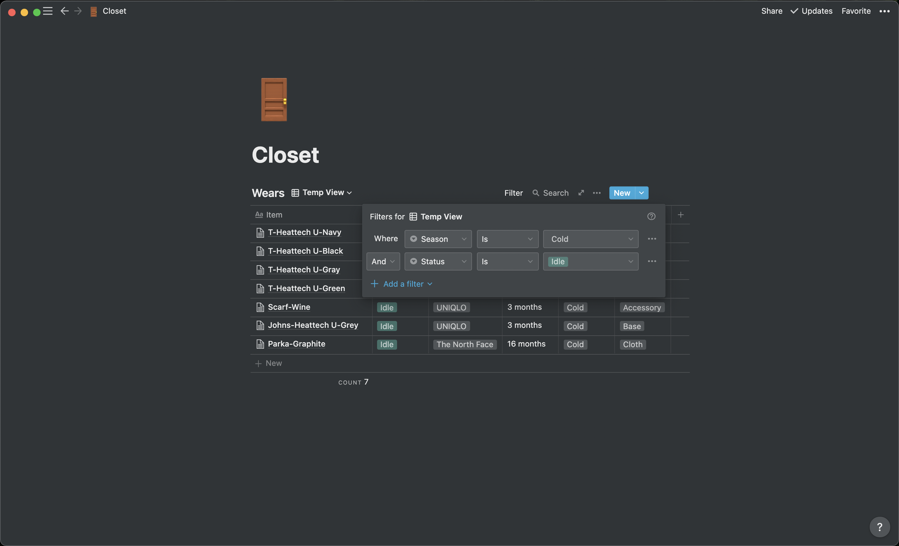

Heard about the idea of capsule wardrobe when I started using Notion, thought would be something interesting so gave it a shot. As a quick note that, there are many tutorials/guides regarding capsule wardrobes on the web, simply search ‘capsule wardrobe’ or ‘capsule wardrobe notion/excel’, you should be able to find some good ones :D, here I am just going to post how I do them, hope they would be helpful?
What my closet looks like nowOn Notion I tried to categorize clothings in coloumns,
- Item: usually named as primary cateogry - secondary category - color
- Status: If I am using it right now, idle, or no longer in use
- Brand: Well, where I got the cloth from :/
- Time: Gives me an idea on how the condition of the cloth are
- Season: When/what season would be a good time to wear this item
- Type: Pretty useful when I want to filter items through, will talk about that later :D
What’s nice about Notion is that, you are allowed to create a secondary page inside of items, where you can define more about the product’s feature
- Name | Size | Color | Price: Helps me to find it on the website in case I need to
- Laundry | Fabric: How I should take care of the product
- Notes: I tried to draw down my thoughts every so often, just so I have a opnion on how I feel when wearing it, pretty useful in comparing similar clothings from different stores
And this excel/table like layout helps me to filter items based on their properties as well, say that I am going to travel to Seattle next week, and wish to find some cloth that’s for cloder weather
I can simply filter through items that has ‘Cold’ for seasons, and see which one I would like to bring :).
The upsides of capsule wardrobe were pretty obvious, it’s quite easy to track everything in my closet, what I am wearing right now, what I need to prep for the coming season, which items can be washed together, which item needs special care etc, helps me to reduce the amount of unnesscary stuff I have. Doing this in Notion also helps me to record more informations about the item, just incase I need to buy it again in the future.
The downsides? Well, the inital set up process can be quite time consuming. I allocated an entire afternoon to get every piece of cloth out of my closet, only to put them back in again, and I don’t even have that much stuff :’). Along with that, the recording process can be a bit repetitive, a lot of times the information that I sometimes put down would only be used once or twice, but felt these are more about my appraoch, rather than the tool/method itself.
At this point, have being trying this for just about half a year, I enjoy things around me well organized and under control, so recording my closet on Notion, was definitely something that I appreciated during my gap semester.